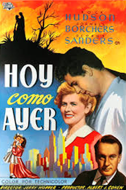
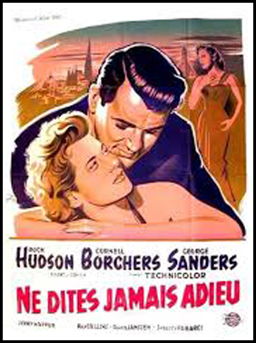
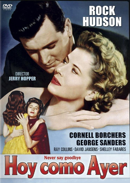

Never Say Goodbye
Rock Hudson
George Sanders
Ray Collins
Helen Wallace
Raymond Greenleaf
John Banner
Clint Eastwood (uncredited)
SYNOPSIS
Dr. Mike Parker travels to speak at a conference in New York. A widower, he and daughter Suzy have a deal with each other to never say goodbye. She remains behind with Miss Tucker, her governess.
While Mike is having a drink after the conference, a caricature artist, Victor, comes to Mike's table along with a woman who plays piano at the nightclub, Dorian Kent. To their mutual shock, Mike recognizes Dorian as his late wife, Lisa. Dorian flees into the street, where she is hit by a car.
While he waits for her injuries to heal, Mike recalls how they met in Vienna, Austria in 1945, when Mike was a US Army doctor. At that time, Lisa and Victor also had an act together as entertainers. Mike treated her for a sprained ankle and ended up marrying Lisa, who gave birth to Suzy. A jealous Mike, however, continually suspected Lisa of having an affair with Victor, and when she went to the Russian sector of the city to seek advice from her father, Lisa became trapped there when the border was temporarily closed and was never seen or heard from again.
Unwilling to renew their marriage but eager to see Suzy again, a recovered Lisa agrees to accompany Mike back to his home. The little girl misunderstands, however, believing her father is bringing home a new wife. She becomes hysterical. Later, she takes a dislike to Lisa and refuses to believe any suggestion that this is her real mother.
Victor visits and charms Suzy with his drawings. Mike gets an inspiration that Suzy should describe to the artist whatever memories she has of what her mother looked like. Lisa is about to leave when Suzy, having seen Victor's sketch, realizes who she is and calls out to Lisa to come back.
A drama romance film directed by Jerry Hopper starring Rock Hudson. The film is loosely based on the play Come Prima Meglio Di Prima by Luigi Pirandello. It is a remake of This Love of Ours (1945).
In the book "Sirk on Sirk. Conversations with John Halliday", Douglas Sirk remembers how he took part in the preparation of the film, and how he was responsible for bringing the leading lady, Cornell Borchers, from Germany to Hollywood. He states that he had to leave to shoot Written on the Wind, but later was called back by the head of the studio to reshoot some George Sanders scenes, probably at the request of the actor (who was a close friend of Sirk).


